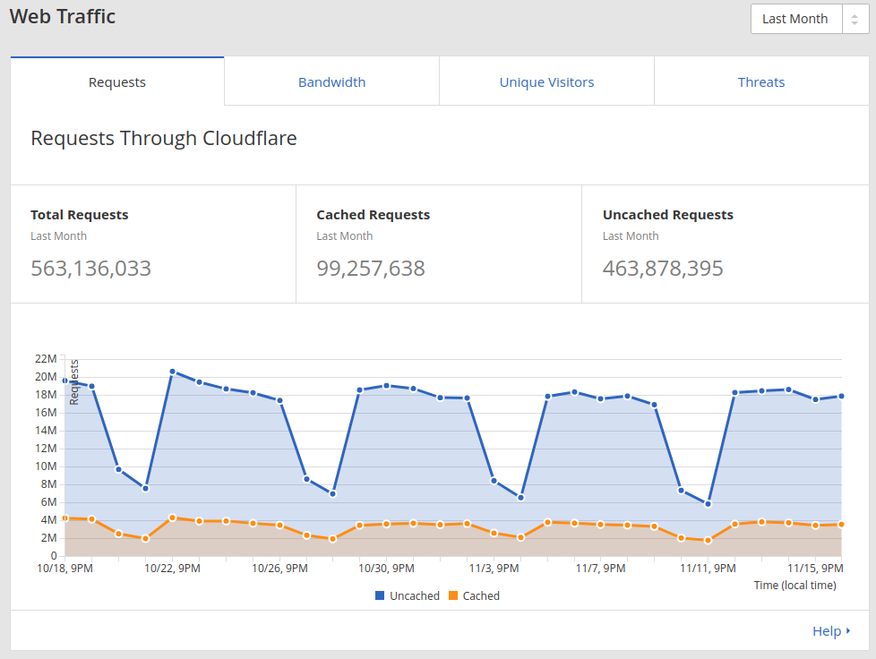
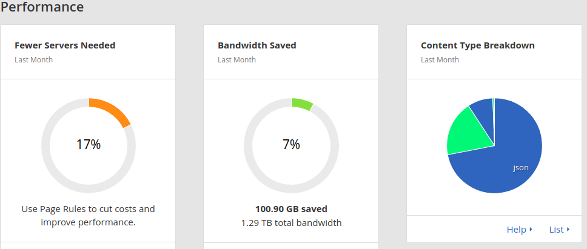
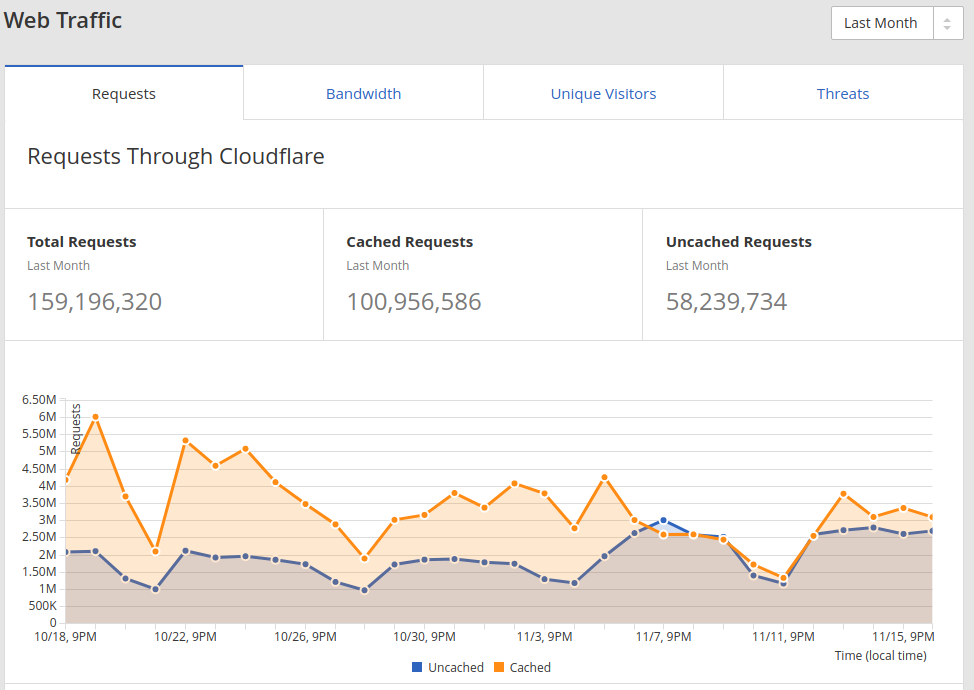
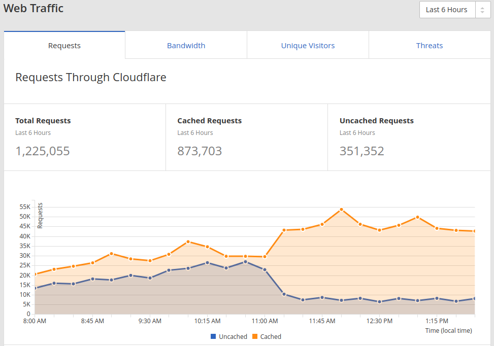
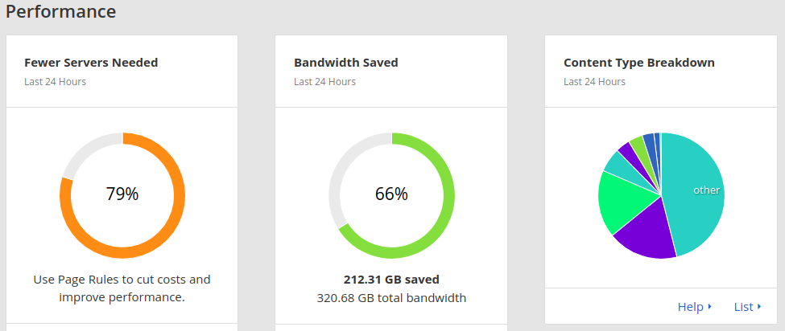

Cacheando fuera de Django
Por @gnarvaja de http://radiocut.fm

RadioCut
- "donde la radio se hace viral, on-demand y social"
- 1.7M visitas por mes
- 1.2M horas escuchadas por mes
- Usamos: Django, GAE, Flask, Google Cloud
- Sobre mí: pythonista desde 2004 / "empresario" o "co-founder"
Definición
“a cache is a hardware or software component that stores data so future requests for that data can be served faster; the data stored in a cache might be the result of an earlier computation, or the duplicate of data stored elsewhere. A cache hit occurs when the requested data can be found in a cache, while a cache miss occurs when it cannot.
Cache hits are faster than recomputing a result or reading from a slower data store; thus, the more requests can be served from the cache, the faster the system performs.”
Cacheando
-
¿Por qué cacheamos?
- Costo de cálculo
- Ancho de banda
- Cercanía (latencia)
- Escalabilidad
- Invalidar (o descachear)
Niveles de caché
- Browser
- CDN
- NGINX / Apache
- Django (memcache)
Cache en Django
from django.views.decorators.cache import cache_page
@cache_page(60 * 15)
def my_view(request):
...
{% load cache %}
{% cache 500 sidebar request.user.username %}
.. sidebar for logged in user ..
{% endcache %}
>>> from django.core.cache import cache
>>> cache.set('my_key', 'hello, world!', 30)
>>> cache.get('my_key')
'hello, world!'
Cabeceras de caché
cache-control: public, max-age=300
vary: Cookie
from django.views.decorators.cache import cache_control
from django.views.decorators.cache import patch_cache_control
from django.views.decorators.vary import vary_on_cookie
@vary_on_cookie
def view_que_depende_del_user(request):
if request.user.is_anonymous():
...
patch_cache_control(response, public=True)
else:
...
patch_cache_control(response, private=True)
@cache_control(public=True)
def view_igual_para_todos(request):
...
Caché NGINX
proxy_cache_path /var/tmp/my-cache levels=1:2 keys_zone=my_cache:10m
max_size=10g inactive=60m;
server {
location /media {
alias /home/user/myapp/media;
expires 30d;
}
location /static {
alias /home/user/myapp/local_static;
expires 90d;
}
location / {
proxy_cache radiocut_staging_cache;
proxy_cache_key $proxy_host$request_uri$cookie_sessionid;
...
}
Content Delivery Network (CDN)
- Servicios de red global de proxies (con caché, obvio)
- Más cercano al usuario (14ms vs 169ms)
- Cloudflare (free), MaxCDN, y muchos más
CDN - radiocut.fm - HTML
CDN - radiocut.fm - HTML
CDN - radiocut.fm - Estáticos
CDN - radiocut.fm - Estáticos
CDN - radiocut.fm - Estáticos
Niveles de caché
| Browser | CDN | NGINX | Django | |
|---|---|---|---|---|
| Distancia al usuario | ||||
| Velocidad | ||||
| Costo | ||||
| Flexibilidad |
Archivos estáticos
- Empezar por acá!
- Cachear en el browser y CDN
- Reduce tráfico, pero más importante, reduce tiempo para el usuario
- ¿Cómo invalidar?
Django Gears
- Sobre CSS y JS
- Consolida y minifica
- Versiona
Django Gears
{% load gears %}
{% css_asset_tag "css/app.css" %}
{% js_asset_tag "js/app.js" %}
/* Dependencies:
*= require ../vendor/jquery
*= require ../vendor/jquery-ui
...
*= require cutapp
*= require adsapp
*/
Cookie less domain
- Uso para los estáticos un dominio cookieless
- Mi dominio de cookies es radiocut.fm, uso static.radiocut.com.ar
- Reduce 1.7kb de upload por cada recurso (33 en home)
Hosted libraries
- https://developers.google.com/speed/libraries/
- Es probable que esté cacheado en el browser
- Evita descargas grandes ante cambio de código
Cacheando Páginas
Cacheando Páginas
- En pocos casos se pueden cachear páginas completas
- Si se pueden cachear partes, pero DENTRO de Django
- Alternativa: cargar en javascript partes de la página
- API Calls
- Single page application
Imágenes
- easy_thumbnails vs imageserver (TM)
- https://bitbucket.org/gnarvaja/imageserver
- Microservicio: con caché afuera
Imágenes
@app.route("/get/thumb/<int:width>/<int:height>/<path:filename>")
def get_thumbnail(width, height, filename):
try:
key, ext = get_key_ext(filename)
except InvalidFilenameError, e:
return abort(400, str(e))
img, cache_control = get_image(filename)
img.thumbnail((width, height), Image.ANTIALIAS)
output = StringIO()
img.save(output, FORMATS[ext.lower()], quality=95)
ret = Response(output.getvalue(), content_type=MIME_TYPES[ext.lower()])
if cache_control:
ret.headers["Cache-Control"] = cache_control
return ret